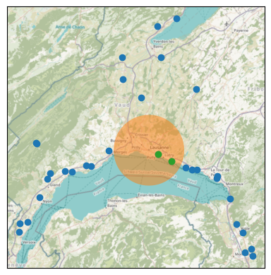
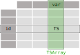
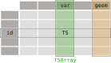

TSDF - Data storage for scalable processing of heterogeneous and geospatial time series
Martí Bosch (CEAT); Gionata Ghiggi (LTE); Son Pham-Ba and Charlotte Weil (ENAC-IT4R)
May 28, 2024.
Funded by the ETH Domain Open
Research Data (ORD) Program
Motivation: dealing with (spatial) Time series data
Example spatial time series (TS) 🕐 data:
- Consider 1 month of weather stations observations every 10 mins
- Which data structure would you use?
| station | 1 | … | 33 | ||||
|---|---|---|---|---|---|---|---|
| variable | temperature | water_vapour | precipitation | … | temperature | water_vapour | precipitation |
| time | |||||||
| 2021-01-01 00:00:00 | 2.2 | 99.0 | 0.2 | … | 3.4 | 92.0 | 0.1 |
| 2021-01-01 00:10:00 | 2.3 | 99.0 | 0.2 | … | 3.2 | 92.0 | 0.1 |
| 2021-01-01 00:20:00 | 2.4 | 99.0 | 0.1 | … | 3.2 | 92.0 | 0.2 |
| … | … | … | … | … | … | … | … |
| 2021-01-31 23:30:00 | 6.1 | 99.0 | 0.2 | … | 6.9 | 80.0 | 0.0 |
| 2021-01-31 23:40:00 | 6.1 | 98.0 | 0.3 | … | 6.9 | 81.0 | 0.0 |
| 2021-01-31 23:50:00 | 6.1 | 99.0 | 0.3 | … | 6.8 | 82.0 | 0.2 |
4464 rows × 99 columns
Wide data frame
- Pros:
- 👍
Efficient TS 🕐
operations on index, e.g.,
df.resample - Cons:
- 👎Requires aligned TS 🕐
- 👎Cannot add station attributes, e.g., “geometry” 🌍 column
- Alternatives?
Long data frame
| variable | temperature | water_vapour | precipitation | |
|---|---|---|---|---|
| station | time | |||
| 1 | 2021-01-01 00:00:00 | 2.2 | 99.0 | 0.2 |
| 2021-01-01 00:10:00 | 2.3 | 99.0 | 0.2 | |
| 2021-01-01 00:20:00 | 2.4 | 99.0 | 0.1 | |
| 2021-01-01 00:30:00 | 2.4 | 99.0 | 0.2 | |
| 2021-01-01 00:40:00 | 2.5 | 99.0 | 0.2 | |
| … | … | … | … | … |
| 33 | 2021-01-31 23:10:00 | 5.6 | 100.0 | 0.1 |
| 2021-01-31 23:20:00 | 5.6 | 100.0 | 0.0 | |
| 2021-01-31 23:30:00 | 5.7 | 100.0 | 0.2 | |
| 2021-01-31 23:40:00 | 5.4 | 100.0 | 0.1 | |
| 2021-01-31 23:50:00 | 5.3 | 100.0 | 0.4 |
147312 rows × 3 columns
Long data frame
- Pros:
- 👍 Flexible for unaligned TS 🕐
- Cons:
- 👎TS 🕐 operations require a groupby approach
- 👎 station attributes, e.g., “geometry” 🌍 column would result in many repeated values
- Alternatives?
Combine two objects
- A wide time series data frame
- A station attributes data frame/series, e.g., “geometry” 🌍
Vector data cubes: xvec
Vector data cubes: xvec
# e.g., stations within 10 km of Lausanne's center
query_geom = gpd.tools.geocode("Lausanne").to_crs(ds.station.crs).buffer(10e3)
ds.xvec.query("station", query_geom)
Vector data cubes: xvec
- Pros:
- 👍
Efficient TS 🕐
operations on time index, e.g.,
ds.resample - 👍 Efficient spatial 🌍 operations on spatial index
- Cons:
- Requires aligned TS 🕐
- How to store to disk 💾? xvec/issues/26
- pickle, joblib: Python only.
- GIS formats: pros and cons of wide/long tables.
Summary
We could not find a tool to deal with:
- unaligned time series
- reliable disk storage, e.g., long term, cross-platform, cloud optimized…
- station (sample) attributes, e.g., “geometry” 🌍
Proposed solution: Enter TStore
What is TStore
TStore is a Python library for flexible storage and processing of (spatial) TS data. Two key features:
- TS 🕐 encapsulation:
TS,TSDF,TSLongandTSWideobjects to organize hetereogeneous (spatial) time series data into Python data frames - TS 🕐 storage:
TStoreis a hierarchically-structured specification to reliably and efficiently store (spatial) TS data based on Parquet (and GeoParquet).
Time series encapsulation
Consider a TS object representing a time-series. Then
the long data frame becomes:
| data | |
|---|---|
| station | |
| 1 | TS[shape=(4464, 3),start=2021-01-01 00:00:00,e… |
| 2 | TS[shape=(4464, 3),start=2021-01-01 00:00:00,e… |
| 3 | TS[shape=(4464, 3),start=2021-01-01 00:00:00,e… |
| … | … |
| 31 | TS[shape=(4464, 3),start=2021-01-01 00:00:00,e… |
| 32 | TS[shape=(4464, 3),start=2021-01-01 00:00:00,e… |
| 33 | TS[shape=(4464, 3),start=2021-01-01 00:00:00,e… |
Advantages
- Flexibility:
- 👍
each station can have its own
TS, e.g., useful with different temporal resolution, periods of maintenance (no data)… - 👍
each
TSobject may be univariate or multivariate
| temperature | water_vapour | precipitation | |
|---|---|---|---|
| station | |||
| 1 | TS[shape=(4464,),start=2021-01-01 00:00:00,end… | TS[shape=(4464,),start=2021-01-01 00:00:00,end… | TS[shape=(4464,),start=2021-01-01 00:00:00,end… |
| 2 | TS[shape=(4464,),start=2021-01-01 00:00:00,end… | TS[shape=(4464,),start=2021-01-01 00:00:00,end… | TS[shape=(4464,),start=2021-01-01 00:00:00,end… |
| 3 | TS[shape=(4464,),start=2021-01-01 00:00:00,end… | TS[shape=(4464,),start=2021-01-01 00:00:00,end… | TS[shape=(4464,),start=2021-01-01 00:00:00,end… |
| … | … | … | … |
| 31 | TS[shape=(4464,),start=2021-01-01 00:00:00,end… | TS[shape=(4464,),start=2021-01-01 00:00:00,end… | TS[shape=(4464,),start=2021-01-01 00:00:00,end… |
| 32 | TS[shape=(4464,),start=2021-01-01 00:00:00,end… | TS[shape=(4464,),start=2021-01-01 00:00:00,end… | TS[shape=(4464,),start=2021-01-01 00:00:00,end… |
| 33 | TS[shape=(4464,),start=2021-01-01 00:00:00,end… | TS[shape=(4464,),start=2021-01-01 00:00:00,end… | TS[shape=(4464,),start=2021-01-01 00:00:00,end… |
TSDF object

- cells
TSare pandasExtensionDtype - columns
TSArrayare pandasExtensionArray
Advantages
GeoPandas compatible:

- No geometries are repeated
Time series storage
- TStore: hierarchically-structured specification to efficiently store time series using Apache Parquet
- 🚧 when geometries are present, use GeoParquet
Consider k years of temperature and precipitation data form n
stations. Then, the TStore looks like:
|
|
Flexibility of TStore
We can …
- have multiple temporal partitioning, e.g., by month, year/month…
- TStore structure, e.g., “variable-station” instead of “station-variable”
Advantages
TSobjects are loaded into the Apache Arrow memory format- ➡️ zero-copy conversion to pandas or polars dataframes.
Example
5 years of 10 min observations from the 33 Agrometeo stations1 in the Canton of Vaud, Switzerland:
| variable | temperature | water_vapour | precipitation | |
|---|---|---|---|---|
| station | time | |||
| 1 | 2019-06-01 00:00:00 | 17.0 | 57.0 | 0.0 |
| 2019-06-01 00:10:00 | 16.5 | 60.0 | 0.0 | |
| 2019-06-01 00:20:00 | 16.3 | 59.0 | 0.0 | |
| … | … | … | … | … |
| 305 | 2024-04-30 23:30:00 | 14.9 | 74.0 | 0.0 |
| 2024-04-30 23:40:00 | 15.3 | 69.0 | 0.0 | |
| 2024-04-30 23:50:00 | 15.3 | 67.0 | 0.0 |
8534361 rows × 3 columns
Resulting TStore directory structure:
|
|
Some stats
| write [s] | read [s] | size [MB] | |
|---|---|---|---|
| CSV | 116.4 | 8.96 | 310.5 |
| TStore, snappy | 6.1 | 22.2 | 249.9 |
| TStore, gzip | 12.9 | 21.6 | 194.4 |
Thank you
Slides: martibosch/tsdf-geopython-2024
Repository: ltelab/tstore
Footnotes
- Data from Agrometeo belongs to the Swiss Federal Administration, see the terms and conditions for more information.